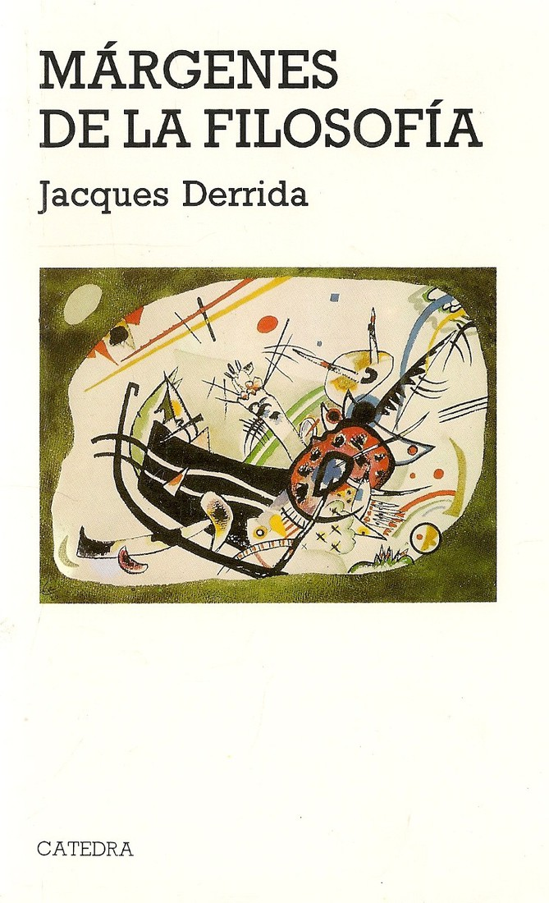

📚 Volver al Catálogo
📚 Volver a la Galería
J. Derrida
Márgenes de la Filosofía
- Sinópsis:
- "Márgenes de la filosofía" es una colección de ensayos cruciales donde Derrida continúa y profundiza su proyecto deconstructivo. En estos textos, aborda a figuras centrales de la tradición filosófica occidental como Platón, Hegel, Husserl y Austin, desestabilizando sus conceptos fundamentales y revelando las tensiones y contradicciones inherentes a sus sistemas de pensamiento. Derrida examina nociones clave como la metáfora, el suplemento, la escritura y la voz, mostrando cómo operan en los "márgenes" de la filosofía para socavar sus pretensiones de certeza y presencia plena. La obra destaca la importancia de lo que queda fuera, de lo no dicho, para comprender la estructura y los límites del discurso filosófico.

- Detalles de Publicación:
- Escrito: Los ensayos que componen "Márgenes de la filosofía" fueron escritos en diferentes momentos, principalmente a finales de la década de 1960 y principios de la década de 1970.
- Publicado: Originalmente en francés en 1972 con el título "Marges de la philosophie". Posteriormente, fue traducido a varios idiomas, consolidándose como una obra esencial para comprender la deconstrucción.

- Más libros de Derrida aquí
⬆️